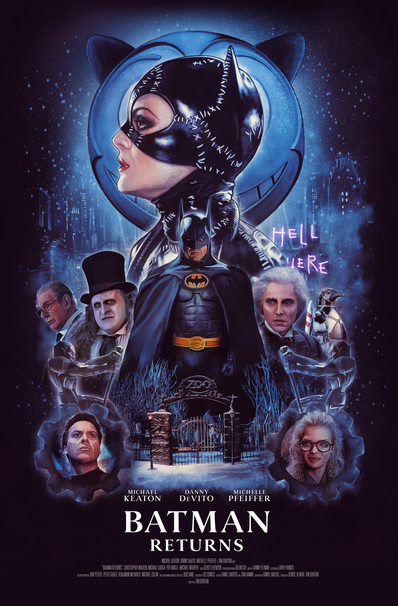
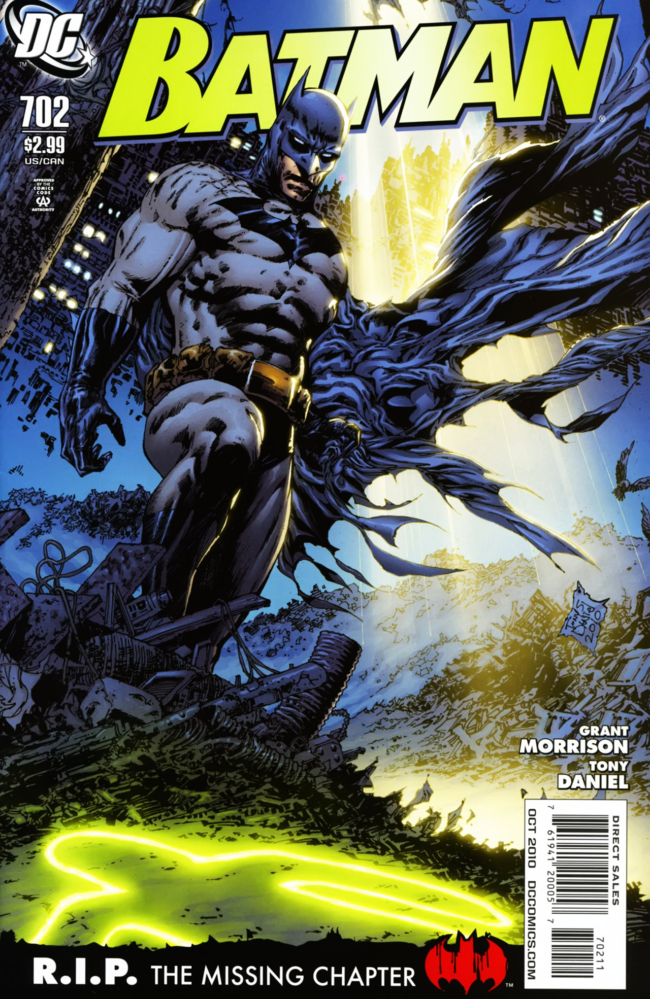
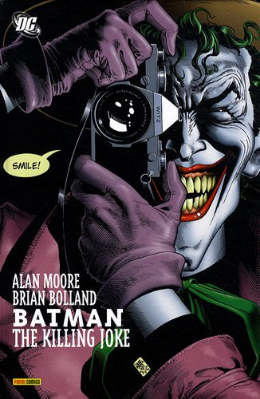
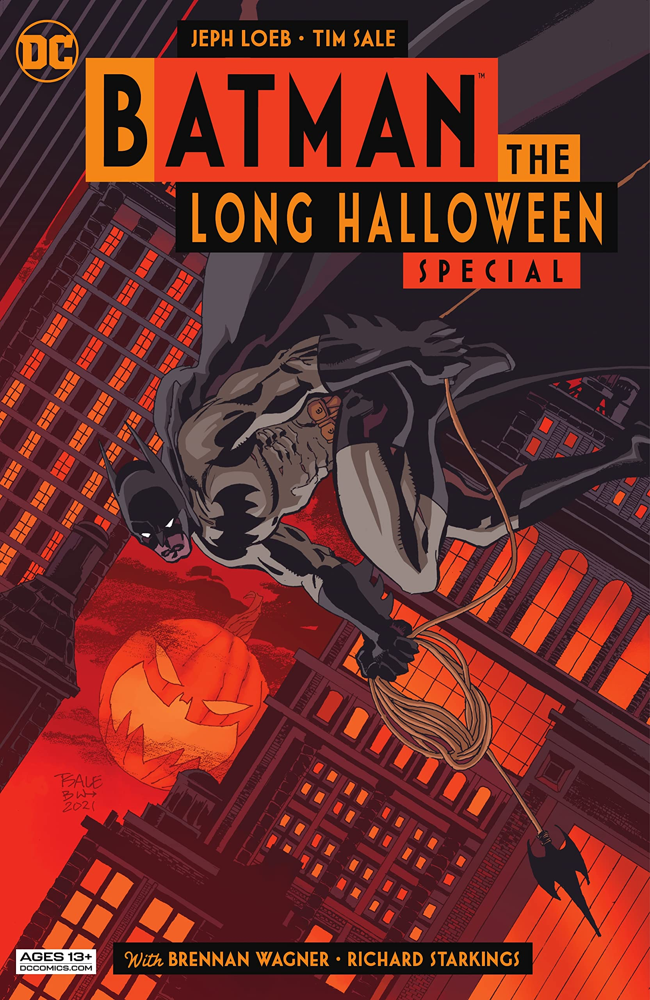
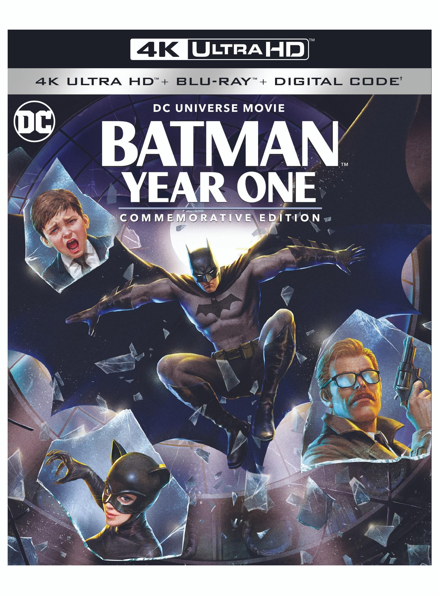

Batman Movie Adaptations
Batman has been a staple of the big screen for decades, evolving through various adaptations with unique styles and storytelling approaches.
Batman in Movies
Batman Returns (1992)
Tim Burton's sequel featured Michael Keaton reprising his role as Batman, facing off against Danny DeVito's Penguin and Michelle Pfeiffer's Catwoman.
The Dark Knight Trilogy (2005-2012)

Directed by Christopher Nolan, this trilogy redefined Batman on screen, emphasizing realism and deep character development. Christian Bale starred as Batman, with Heath Ledger's Joker in "The Dark Knight" being one of the most acclaimed performances in cinema history.
The Batman (2022)

Directed by Matt Reeves, this film presents a younger, more detective-focused Batman, played by Robert Pattinson. The film emphasizes Gotham’s gritty underworld and features Paul Dano as the Riddler.
Batman in Comics 
Since his first appearance in Detective Comics #27 (1939), Batman has been one of the most beloved superheroes in comic book history, inspiring countless adaptations.
The Killing Joke (1988) 
Written by Alan Moore, this one-shot graphic novel explores the Joker’s possible origins and his twisted relationship with Batman.
The Long Halloween (1996-1997) 
A noir-inspired detective story by Jeph Loeb and Tim Sale, this comic follows Batman’s early years as he investigates a mysterious holiday-themed serial killer.
Batman: Year One (1987) 
Written by Frank Miller, this story redefines Batman’s origins, depicting his first year fighting crime in Gotham while forming alliances with Jim Gordon.